컴퓨터응용밀링기능사 (2015-10-10 기출문제)
1과목: 기계재료 및 요소
1. 다음 열처리방법 중에서 표면경화법에 속하지 않는 것은?
- 침탄법
- 질화법
- 고주파경화법
- 항온열처리법
(정답률: 69%)

2. 같은 조성의 강재를 동일한 조건하에서 담금질 하여도 그 재료의 굵기, 두께 등이 다르면 냉각속도가 다르게 되므로 담금질 결과가 달라지게 된다. 이러한 것을 담금질의 무엇이라 하는가?
- 경화능
- 밴드
- 질량효과
- 냉각능
(정답률: 65%)
3. 보통주철에 함유되는 주요 성분이 아닌 것은?
- Si
- Sn
- P
- Mn
(정답률: 57%)
4. 구리의 원자기호와 비중과 이 관계가 옳은 것은?(단, 비중은 20℃, 무산소동이다.)
- Al - 6.86
- Ag - 6.96
- Mg - 9.86
- Cu - 8.96
(정답률: 75%)
5. 탄소강의 표준조직이 아닌 것은?
- 페라이트
- 트루스타이트
- 펄라이트
- 시멘타이트
(정답률: 60%)
6. 단일 금속에 비해 합금의 특성이 아닌 것은?
- 용융점이 낮아진다.
- 전도율이 낮아진다.
- 강도와 경도가 커진다.
- 전성과 연성이 커진다.
(정답률: 41%)
7. 보통 합금보다 회복력과 회복량이 우수하여 센서(sensor)와 액추에이터(actuator)를 겸비한 기능성 재료로 사용되는 합금은?
- 비정질 합금
- 초소성 합금
- 수소 저장 합금
- 형상 기억 합금
(정답률: 78%)
8. 체결하려는 부분이 두꺼워서 관통구멍을 뚫을 수 없을 때 사용되는 볼트는?
- 탭볼트
- T홈볼트
- 아이스볼트
- 스테이볼트
(정답률: 61%)
9. 다음 중 가장 큰 회전력을 전달할 수 있는 것은?
- 안장 키
- 평 키
- 묻힘 키
- 스플라인
(정답률: 70%)
10. 양끝을 고정한 단면적 2cm2인 사각봉이 온도 -10℃에서 가열되어 50℃가 되었을 때, 재료에 발생하는 열응력은?(단 사각봉의 탄성계수는 21 GPa, 선팽창게수는 12×10-6/℃이다.)
- 15.1 MPa
- 25.2 MPa
- 29.9 MPa
- 35.8 MPa
(정답률: 27%)
11. 나사에서 리드(L), 피치(P), 나사 줄 수(n)와의 관계식으로 옳은 것은?
- L = P
- L = 2P
- L = nP
- L = n
(정답률: 81%)
12. 강도와 기밀을 필요로 하는 압력용기에 쓰이는 리벳은?
- 접시머리 리벳
- 둥근머리 리벳
- 납짝머리 리벳
- 얇은 납작머리 리벳
(정답률: 57%)
13. 표준기어의 피치점에서 이끝까지의 반지름 방향으로 측정한 거리는?
- 이뿌리 높이
- 이끝 높이
- 이끝 원
- 이끝 틈새
(정답률: 58%)
14. 다음 중 V벨트의 단면 형상에서 단면이 가장 큰 벨트는?
- A
- C
- E
- M
(정답률: 57%)
15. 풀리의 지름 200 mm, 회전수 900 rpm인 평벨트 풀리가 있다 벨트의 속도는 약 몇 m/s 인가?
- 9.42
- 10.42
- 11.42
- 12.42
(정답률: 34%)
2과목: 기계제도(절삭부분)
16. 도면에서 2종류 이상의 선이 같은 장소에서 중복되는 경우에 우선순위를 옳게 나타낸 것은?
- 외형선 > 절단선 > 숨은선 > 치수 보조선 > 중심선 > 무게 중심선
- 외형선 > 숨은선 > 절단선 > 중심선 > 무게 중심선 > 치수 보조선
- 숨은선 > 절단선 > 외형선 > 중심선 > 무게 중심선 > 치수 보조선
- 숨은선 > 절단선 > 외형선 > 치수 보조선 > 중심선 > 무게 중심선
(정답률: 77%)
17. 다음 중 기하공차 기호와 그 의미의 연결이 틀린 것은?
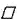
: 평면도- : 동축도
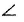
: 경사도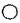
: 원통도
(정답률: 64%)
18. 다음 도면에 대한 설명으로 옳은 것은?
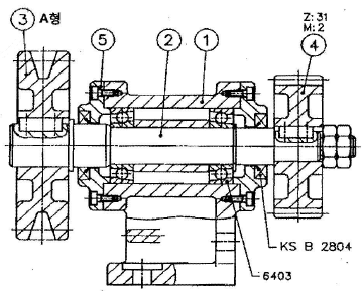
- 품번 ③에서 사용하는 V벨트는 KS 규격품중에서 그 두께가 가장 작은 것이다.
- 품번 ④는 스퍼기어로서 피치원 지름은 62mm이다.
- 롤러베어링이 사용되었으며 안지름치수는 15mm이다.
- 축과 스퍼기어는 묻힘 핀으로 고정되어 있다.
(정답률: 53%)
19. 치수 보조 기호 중 구의 반지름 기호는?
- SR
- Sø
- ø
- R
(정답률: 73%)
20. "ø20 h7"의 공차 표시에서 “7”의 의미로 가장 적합한 것은?
- 기준 치수
- 공차역의 위치
- 공차의 등급
- 틈새의 크기
(정답률: 68%)
21. 다음 나사 중 리드가 가장 큰 것은?
- 피치가 2.5mm인 2줄 나사
- 피치가 2.0mm인 3줄 나사
- 피치가 3.5mm인 2줄 나사
- 피치가 6.5mm인 1줄 나사
(정답률: 80%)
22. 국부 투상도를 나타낼 때 주된 투상도에서 국부 투상도로 연결하는 선이 종류에 해당하지 않는 것은?
- 치수선
- 중심선
- 기준선
- 치수 보조선
(정답률: 39%)
23. 그림과 같이 벨트 풀리의 암 부분을 투상한 단면도법은?
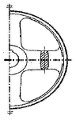
- 부분 단면도
- 국부 단면도
- 회전도시 단면도
- 한쪽 단면도
(정답률: 55%)
24. 표면의 결 도시기호가 그림과 같이 나타날 때 설명으로 틀린 것은?
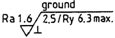
- 표면의 결은 연삭으로 제작
- Ra = 1.6μm 에서 최대 Ry=6.3μm 까지로 제한
- 투상면에 대략 수직인 줄무늬 방향
- 샘플링 길이는 2.5μm
(정답률: 45%)
25. 그림과 같은 입체도에서 화살표 방향에서 본 것을 정면도로 할 때 가장 적합한 정면도는?
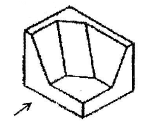
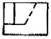
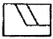
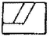
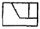
(정답률: 85%)
26. 기어가공에서 창성법에 의한 가공이 아닌 것은?
- 호브에 의한 가공
- 형판에 의한 가공
- 래크 커터에 의한 가공
- 피니언 커터에 의한 가공
(정답률: 53%)
27. 선반작업에서 3개의 조가 120° 간격으로 구성 배치되어 있는 척은?
- 단동척
- 콜릿척
- 연동척
- 마그네틱척
(정답률: 74%)
28. 일반적으로 드릴링 머신에서 가공하기 곤란한 작업은?
- 카운터 싱킹
- 스플라인 홈
- 스폿 페이싱
- 리밍
(정답률: 57%)
29. 테이블 위에 설치하며 원형이나 윤곽 가공, 간단한 등분을 할 때 사용하는 밀링 부속장치는?
- 슬로팅 장치
- 회전 테이블
- 밀링 바이스
- 래크 절삭 장치
(정답률: 45%)
30. 재질이 연한 금속을 가공할 때 칩이 공구의 윗면 경사면 위를 연속적으로 흘러 나가는 형태의 칩은?
- 전단형 칩
- 열단형 칩
- 유동형 칩
- 균열형 칩
(정답률: 77%)
3과목: 기계공작법
31. 다음 중 수나사를 가공하는 공구는?
- 탭
- 리머
- 다이스
- 스크레이퍼
(정답률: 60%)
32. 빌트업 에지(built up edge)의 발생을 감소시키기 위한 내용중 틀린 것은?
- 윤활성이 좋은 절삭 유제를 사용한다.
- 공구의 윗면 경사각을 크게 한다.
- 절삭 깊이를 크게 한다.
- 절삭 속도를 크게 한다.
(정답률: 70%)
33. 지름이 50 mm인 연강을 선반에서 절삭할 때, 주축을 200 rpm으로 회전시키면 절삭 속도는 약 몇 m/min 인가?
- 21.4
- 31.4
- 41.4
- 51.4
(정답률: 64%)
34. 다음 연삭숫돌 표시 방법 중 “60”은 무엇을 나타내는가?
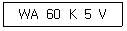
- 숫돌입자
- 입도
- 결합도
- 결합제
(정답률: 66%)
35. 일반적으로 오토 콜리메이터를 이용하여 측정하는 것으로 거리가 먼 것은?
- 진직도
- 직각도
- 평행도
- 구멍의 위치
(정답률: 65%)
36. 연마제를 가공액과 혼합한 것을 압축공기를 이용하여 가공물의 표면에 분사시켜 매끈한 다듬면을 얻는 가공법은?
- 슈퍼 피니싱
- 액체 호닝
- 폴리싱
- 버핑
(정답률: 74%)
37. 일반적으로 선반작업에서 가공할 수 없는 가공법은?
- 외경 가공
- 테이퍼 가공
- 나사 가공
- 기어 가공
(정답률: 71%)
38. 산화알루미늄 분말을 주성분으로 마그네슘, 규소 등의 산화물과 소량의 다른 원소를 첨가하여 소결한 절삭공구 재료는?
- 세라믹
- 다이아몬드
- 초경합금
- 고속도강
(정답률: 54%)
39. 절삭면적을 나타낼 때 절삭깊이와 이송량과의 관계는?
- 절삭면적 = 이송량 / 절삭깊이
- 절삭면적 = 절삭깊이 / 이송량
- 절삭면적 = 절삭깊이 × 이송량
- 절삭면적 = (이송량 × 절삭깊이) / 2
(정답률: 68%)
40. 일반적으로 절삭가공에서 절삭유제로 사용하는 것으로 가장 거리가 먼 것은?
- 유화유
- 다이나모유
- 광유
- 지방질유
(정답률: 49%)
4과목: CNC공작법 및 안전관리
41. 밀링머신의 분할 가공방법 중에서 분할 크랭크를 40회전하면, 주축이 1회전하는 방법을 이용한 분할법은?
- 직접 분할법
- 단식 분할법
- 차동 분할법
- 각도 분할법
(정답률: 47%)
42. 게이지 블록의 부속품 중 내측 및 외측을 측정할 때 홀더에 끼워 사용하는 부속품은?
- 둥근형 조
- 센터 포인트
- 베이스 블록
- 나이프 에지
(정답률: 44%)
43. 다음중 서버모터가 일반적으로 갖추어야 할 특성으로 거리가 먼 것은?
- 큰 출력을 낼 수 있어야 한다.
- 진동이 적고 대형이어야 한다.
- 온도상승이 적고 내열성이 좋아야 한다.
- 높은 회전각 정도를 얻을 수 있어야 한다.
(정답률: 70%)
44. CNC의 서보기구를 위치 검출방식에 따라 분류할 때 해당하지 않는 것은?
- 폐쇄회로 방식(closed loop system)
- 반폐쇄회로 방식(semi-closed loop system)
- 반개방회로 방식(semi-open loop system)
- 복합회로 방식(hybrid servo system)
(정답률: 65%)
45. CNC 선반에서 드릴작업시 사용되는 기능은?
- G74
- G90
- G92
- G94
(정답률: 49%)
46. CNC 선반에서 증분 지령 어드레스는?
- V, X
- U, W
- X, Z
- Z, W
(정답률: 73%)
47. 다음 CNC 선반의 프로그램에서 자동원점 복귀를 나타내는 준비기능은?
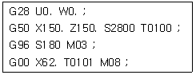
- G00
- G28
- G50
- G96
(정답률: 69%)
48. 다음 보조기능의 설명으로 틀린 것은?
- M00- 프로그램 정지
- M02- 프로그램 종료
- M03- 주축시계방향 회전
- M⑤- 주축반시계방향 회전
(정답률: 68%)
49. 일반적으로 CNC 선반에서 절삭동력이 전달되는 스핀들 축으로 주축과 평행한 축은?
- X축
- Y축
- Z축
- A축
(정답률: 54%)
50. 밀링작업에 대한 안전사항으로 거리가 먼 것은?
- 전기의 누전여부를 작업전에 점검한다.
- 가공물의 기계를 정지한 상태에서 견고하게 고정한다.
- 커터 날 끝과 같은 높이에서 절삭상태를 관찰한다.
- 기계 가동 중에는 자리를 이탈하지 않는다.
(정답률: 76%)
51. CNC 선반의 프로그램이다. ( ) 안에 들어갈 G-코드로 적합한 것은?
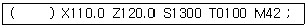
- G60
- G50
- G40
- G30
(정답률: 67%)
52. 머시닝센터에서 지름 10mm인 엔드밀을 사용하여 외측 가공 후 측정값이 ø62.0mm가 되었다. 가공 치수를 ø61.5mm로 가공하려면 보정값을 얼마로 수정하여야 하는가?(단, 최초 보정은 5.0으로 반지름값을 사용하는 머시닝센터이다.)
- 4.5
- 4.75
- 5.5
- 5.75
(정답률: 43%)
53. CNC 프로그램에서 EOB의 뜻은?
- 프로그램의 종료
- 블록의 종료
- 보조기능의 정지
- 주축의 정지
(정답률: 71%)
54. 다음 그림에서 A에서 B로 가공하는 CNC 선반 프로그램으로 옳은 것은?
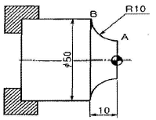
- G02 X50.0 Z-10.0 R-10.0 F0.1 ;
- G02 X50.0 Z-10.0 R10.0 F0.1 ;
- G03 X50.0 Z-10.0 R10.0 F0.1 ;
- G04 X50.0 Z-10.0 I10.0 F0.1 ;
(정답률: 57%)
55. CNC 공작기계의 조작반 버튼 중 한 블록씩 실행시키는데 사용되는 버튼은?
- 드라이 런(Dry run)
- 피드 홀드(Feed hold)
- 싱글 블럭(Single block)
- 옵셔널 블록 스킵(Optional block skip)
(정답률: 73%)
56. 휴지(dwell)시간 지정을 의미하는 어드레스가 아닌 것은?
- X
- P
- U
- K
(정답률: 67%)
57. 다음 프로그램에서 N90 블록을 실행할 때 주축의 회전수는 몇 rpm 인가?
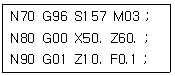
- 950
- 1000
- 1⑤0
- 1100
(정답률: 52%)
58. CNC 공작기계에서 정보 흐름의 순서가 옳은 것은?
- 지령펄스열 → 서보구동 → 수치정보 → 가공물
- 지령펄스열 → 수치정보 → 서보구동 → 가공물
- 수치정보 → 지령펄스열 → 서보구동 → 가공물
- 수치정보 → 서보구동 → 지령펄스열 → 가공물
(정답률: 59%)
59. 머시닝센터에서 작업평면이 Y-Z 평면일 대 지령되어야 할 코드는?
- G17
- G18
- G19
- G20
(정답률: 57%)
60. 수치제어 공작기계에서 수치제어가 뜻하는 것은?
- 수치와 부호로써 구성된 정보로 기계의 운전을 자동으로 제어하는 것
- 사람이 기계의 손잡이를 조작하여 공구 및 공작물을 이동 제어하는 것
- 한 사람이 여러 대의 공작 기계를 운전, 조작 제어하며 작업하는 것
- 소재의 투입부터 가공, 출고까지 관리하는 것으로 공장전체 시스템을 무인화 하는 것
(정답률: 62%)